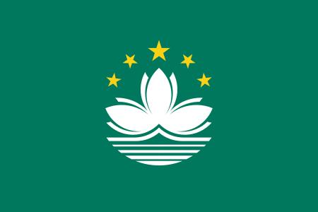

Whole History Rating (WHR) of Active Gomoku Players (2025-12-31) (Gy1≥10)
Last update: 2026-09-04, Players: 1255, Games: 17793
Note: This rating is calculated based on the WHR algorithm by Rémi Coulom, a similar approach as the Go Ratings. The core algorithm is based on the open-source code on Github.
History ratings: Country/Region: Active/All players:
| Rank | Player | Rating | ± | Gy1 | Gy2 | Gy5 | Country/Region | BY |
|---|---|---|---|---|---|---|---|---|
| 1 |  Fitzermann Adrian Fitzermann Adrian | 2721 | 71 | 19 | 27 | 38 | Poland | |
| 2 |  Háša Miroslav Háša Miroslav | 2694 | 87 | 15 | 37 | 87 | Czechia | 1994 |
| 3 | Muzika Martin | 2650 | 79 | 11 | 19 | 44 | Czechia | |
| 4 | Laube Pavel | 2595 | 69 | 18 | 32 | 86 | Czechia | 1987 |
| 5 |  Tóth Gergő Tóth Gergő | 2580 | 74 | 18 | 26 | 67 | Hungary | 1987 |
| 6 | Żukowski Michał | 2566 | 66 | 27 | 27 | 27 | Poland | |
| 7 | Zajk Michał | 2559 | 64 | 27 | 35 | 46 | Poland | |
| 8 |  Topkin Georg-Romet Topkin Georg-Romet | 2523 | 62 | 35 | 43 | 50 | Estonia | 2000 |
| 9 | Tesařík Štěpán | 2521 | 69 | 17 | 39 | 100 | Czechia | |
| 10 | Fňukal František | 2507 | 73 | 19 | 19 | 35 | Czechia | |
| 11 |  Eged Igor Eged Igor | 2504 | 58 | 34 | 56 | 141 | Slovakia | |
| 12 |  Chang Yi-Feng Chang Yi-Feng | 2499 | 89 | 19 | 19 | 19 | Chinese Taipei | |
| 13 | Žižka Petr | 2490 | 49 | 59 | 97 | 182 | Czechia | |
| 14 | Souček Lukáš | 2477 | 47 | 57 | 87 | 194 | Czechia | |
| 15 | Horák Jakub | 2475 | 55 | 55 | 78 | 158 | Czechia | 2003 |
| 16 |  Liu Yang Liu Yang | 2454 | 121 | 15 | 15 | 15 | China | |
| 17 | Holub Matěj | 2412 | 56 | 46 | 84 | 167 | Czechia | 2002 |
| 18 |  Katsev Ilya Katsev Ilya | 2406 | 88 | 12 | 20 | 53 | Russian Renju Association | 1978 |
| 19 | Lents Johann | 2360 | 99 | 16 | 16 | 16 | Estonia | 1986 |
| 20 |  Ostrovskyi Bohdan Ostrovskyi Bohdan | 2349 | 80 | 14 | 27 | 27 | Ukraine | |
| 21 | Małowiejski Piotr | 2310 | 64 | 30 | 52 | 123 | Poland | |
| 22 |  Fukui Nobuhiro Fukui Nobuhiro | 2304 | 93 | 24 | 24 | 24 | Japan | |
| 23 | Shen Zhuosheng | 2285 | 114 | 14 | 14 | 14 | China | |
| 24 | Fojtík Jakub | 2282 | 64 | 38 | 60 | 87 | Czechia | 2002 |
| 25 | Skrypnyk Dmytro | 2282 | 81 | 14 | 28 | 28 | Ukraine | |
| 26 | Purk Tauri | 2276 | 90 | 16 | 16 | 16 | Estonia | |
| 27 | Ulan Oleksandr | 2256 | 73 | 14 | 28 | 28 | Ukraine | |
| 28 | Kolk Kuno | 2250 | 80 | 23 | 23 | 23 | Estonia | |
| 29 | Podolský Petr | 2240 | 54 | 47 | 69 | 97 | Czechia | 2005 |
| 30 |  Sun In | 2209 | 106 | 16 | 16 | 16 | Macao, China | |
| 31 | Verholiak Yuri | 2191 | 78 | 14 | 28 | 28 | Ukraine | |
| 32 | Purkrábek Jan | 2154 | 90 | 16 | 16 | 37 | Czechia | |
| 33 | Umantsiv Roman | 2139 | 79 | 13 | 26 | 26 | Ukraine | |
| 34 | Lami Gábor | 2115 | 90 | 15 | 23 | 23 | Hungary | |
| 35 | Mikeš Alois | 2098 | 50 | 62 | 84 | 84 | Czechia | 2008 |
| 36 | Saik Oleksiy | 2082 | 72 | 13 | 26 | 26 | Ukraine | 1965 |
| 37 | Pusztai Péter | 2031 | 87 | 16 | 24 | 32 | Hungary | |
| 38 | Vajda Beáta | 2010 | 91 | 16 | 16 | 16 | Hungary | |
| 39 | Habr Ondřej | 2010 | 98 | 23 | 23 | 23 | Czechia | |
| 40 | Syrvatka Nazarii-Stanislav | 1989 | 92 | 11 | 11 | 11 | Ukraine | |
| 41 | Hyžík Stanislav | 1951 | 90 | 14 | 22 | 22 | Czechia | |
| 42 | Hrechkosii Illia | 1929 | 83 | 11 | 11 | 11 | Ukraine | |
| 43 | Bilusyak Mykhailo | 1924 | 86 | 13 | 19 | 19 | Ukraine | |
| 44 | Gašová Helena | 1876 | 66 | 29 | 37 | 37 | Czechia | 2007 |
| 45 | Jiřík Vít | 1859 | 94 | 16 | 16 | 16 | Czechia | |
| 46 | Kamarás Csaba | 1792 | 56 | 47 | 77 | 141 | Hungary | |
| 47 | Kamarás Krisztina | 1770 | 56 | 47 | 77 | 142 | Hungary | |
| 48 | Halena M. Nándor | 1679 | 65 | 22 | 37 | 93 | Hungary | |
| 49 | Verkholiak Matvii | 1633 | 140 | 12 | 12 | 12 | Ukraine |